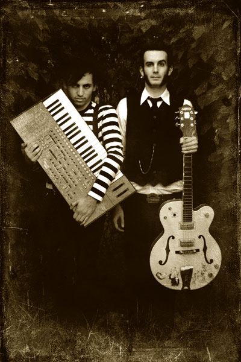

Creature Feature is a horror rock band based in Los Angeles that consists of two composers called Erik X and Curtis Rx.
The band was originally formed in 2005 after a Halloween party and their music puts a terrifying twist on the gothic rock genre through the use of inspiration from past horror films, dark Halloween memories and macarbe literature work such as H.P. Lovecrafts: The Call of Cthulhu and Other Weird Stories or Edward Goreys: Amphigorey.
Creature Features most well known songs include: